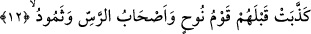

Ebû Hüreyre (r.a.) şöyle rivâyet etmiştir: Yağmur yağıp da oluklardan sular akınca
Rasûlullah (s.a.) şöyle buyururdu: “Bu sene size kuraklık yoktur.”[234]
“İşte (dirilip kabirlerden) çıkış da böyledir.”
Yani içinde bulunduğunuz bu güzel hayat kabirlerden çıktıktan sonraki hayatınıza bir
misaldir. Buna aykırı herhangi bir şey söz konusu değildir.
Şöyle bir rivâyet vardır: Allah kırk gece erkeklerin menîsi gibi yağmur yağdırır,
yağmur suyu yerin altına girer ve onların (ölülerin) etlerini, damarlarını ve kemiklerini
geliştirir. Sonra da Allah onları diriltir ve yerden tekrar çıkarır.
Ölülerin diriltilerek çıkarılmasını, yerden bitkilerin diriltilerek çıkarılmasına kıyas
etmede, bitkilerin bitirilmesi hâdisesinin şânını yüceltmek, ölülerin diriltilmesi
hâdisesini de küçültmek bulunmaktadır. Böylece bitkilerin çıkartılması ile ölülerin
diriltilmesi arasında bir benzerlik kurulmaktadır. Bu, kıyas yöntemini göstermek ve
meseleyi insanların daha rahat anlamalarını sağlamak içindir.
Kâşifî şöyle der: Eğer bir kimse, bir ölünün gömülmesi gibi toprağa gömülen bir
tohumun hayat bulmasını düşünse, gizliyken ortaya çıkmanın uzak olmadığını görür.
Bunun gibi ölüler de hayattan bir koku taşıyabilirler.
Hangi tohum (dane) toprağa düştü de geri bitmedi,
İnsan tohumundan neden şüpheye düşmektesin.
Aşağı doğru düşmeyi gördünse yukarı doğru yükselmeği de gör,
Güneşin ve ayın batmasının onlara ne zararı olur?
Bu âyet-i kerimede ruhlar semasından ilâhî feyiz suyunun indirilmesine de işâret
vardır. Cenâb-ı Allah bu feyiz suyuyla kalp bahçelerini, kendisiyle Allah’tan gayrı her
şeyin muhabbetinin silineceği muhabbet tohumunu ve marifet türlerinden kat kat
tomurcukları olan tevhid ağacını yeşertir. Tüm bunlar rableri yanında geceleyen kullar
için bir rızıktır. Rableri olan Allah Teâlâ onları yedirir, içirir ve nurundan coşan bu
feyizle ölü olan kalp beldesini diriltir. Zira âyette şöyle buyrulur: “Ölü iken
dirilttiğimiz ve kendisine, bir nur verdiğimiz kimsenin durumu…” (En’am, 6/122)
İşte varlığın karanlıklarından Vâcîbü’l-vücûd olan Allah Teâlâ’nın nuruna çıkış da
böyledir. Tüm bunları iyice anlaman gerekir.
12. Onlardan önce Nuh kavmi, Res halkı ve Semûd da yalanlamıştı.
Mekke halkından önce Şît’in ve Kàbil’in çocukları olan Nûh kavmi, Nûh (a.s.)’ı
yalanladılar.
Ress’in Aden’de Semûd kavminin devamı olan bir topluluğa âid bir kuyu olduğu